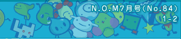
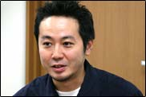
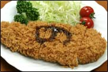
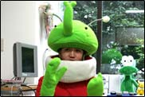
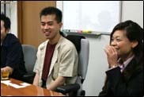
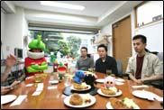
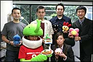

| 今回お邪魔した開発会社は、株式会社クリーチャーズ。万全の態勢(スタッフの画像を参照)でN.O.Mを迎え撃ってくれただけでなく、さらにトラップ並みの事態がインタビュー中に発生！ あちこちの会社へインタビューに伺っていますが、さしものわたくしもこういうのは初めてです。個人的にとても面白かった＋美味しかった！ ありがとうございました。というわけで、なにが起きたのか最後までじっくり読むべし！ |
--今作のできるまでを教えて下さい。
五十嵐： 瀬谷が密かに暖めていた企画なんです。当時は純粋な数字ゲームだったんですが、ここに『ちゃいリアン』の設定を入れてまとめてみたんです。数字だけでちょっと硬派なパズルゲームだったので、キャラを載せてみたら、これが不思議な感覚でマッチしまして。あ、それとちゃいリアンは「ちっちゃいエイリアン」の略です。
瀬谷： 僕は元々パズルゲームが好きだったんです。今回いいタイミングで「なにかいいネタはないか」と言われまして、社長に「これはどうでしょう」と出してみたんです。
五十嵐： ロジック要素の強いパズルの上に、ちゃいリアンの楽しい要素を足したら、不思議にゆるく楽しいゲームにまとまった感じになりまして。
中野： 我々が見た時は、既にできあがっていましたね。
田島： ２年ほど前に初めて見たんですが、その時はこんな感じの原型ができてました。
--そうだったんですか。
五十嵐： と、いうか。瀬谷が暖めていたというより、もう自分で勝手にプログラムまで組んで動くようになってたんですよ。(一同笑)。
(ここで部屋の扉が開き、トンカツが運ばれてくる）
--あの、これは一体…？
五十嵐： パッケージに使ったトンカツです(笑)。
石井： 「の」の字がソースで書いてあるのが特徴です。
--そういえば、"くるくるレンジ"でもおいしそうな食材が登場しますね。
五十嵐： あれは最後の方に追加したモードなんです。トンカツは銀座にあるトンカツ屋さんの厨房に入れてもらって、一流のトンカツを撮らせて頂きました。
石井： 食べ物のネタも段々尽きてきまして、出前と言えばソバだろうとか色々言ってるうちにもう手がなくなって、アイスでもいいかなとか誰かが言い出したんですよね。レンジなのに(笑)。
五十嵐： 元々あったモードとしては"くるパチ６"が最初なんです。その次に"くるくるウォーク"ができました。くるパチがちょっと硬派なので、とっつきやすくするためにこれを入れたんですよね。さらに易しいモードが必要ということで、"くるくるレンジ"を実装しました。
--このパッケージもインパクト大ですよね。
石井： トンカツもそうですが、お皿もどれがいいかとか、とにかく探し回りました。撮影にもかなり力を入れまして、「衣が美味しそうにカリっと立たない」「キャベツがシャキッとして見えない」と真面目に悩みましたし。
田島： こちら(任天堂)の担当の者が石井さんと電話している声が聞こえたんですが、「美味しそうに見える衣について」本気で相談してましたから(笑)。
石井： 結果的に、衣を別に作って上から振りかけて増量するというやり方になったんですけど。キャベツでも相当試行錯誤しましたよ。
--そこまで行くと、フードコーディネーターのお仕事ですよね(笑)。
|
--では話を戻して、最初からあった"くるパチ６"について教えて下さい。
瀬谷： 普通のパズルだと絵合わせが主流ですが、"くるパチ６"は『６』まで数字を合わせないとダメなんです。これも最初は絵合わせでしたが、色が変わって連鎖できるようなコンセプトで作っていきました。『４』までという風に作ったりもしたんですが、これだと連鎖が続いて終わらないので『６』までになりました。既存のパズルゲームとは違う仕組みなので、はじめはちょっとびっくりするかもしれません。でも、だからこそやり込んだときにハマれるんです。まずは、イージーのレベルでで練習してもらえれば楽しめると思いますよ。
石井： 調整の段階で任天堂さんのアドバイスを頂いたんですが、それが本当に良かったと思います。難易度の面で壁にぶつかっていたので、本当に助かりました。
瀬谷： 数字って苦手な人も多いじゃないですか。数字で行こうというのに落ち着くまでは、色々と案がありました。どうやって数字に対する敷居を低くしようか、ということで登場したのが『ちゃいリアン』なんです。
石井： その後はちゃいリアンのキャライメージ、この脱力感やほわほわした感じをどうしたら伝えられるか？とみんなで考えました。結果、テキストやサウンドの内容とタイミングで「ちゃいリアンらしさ」を感じ取ってもらえるようにまとめてあります。
--やっぱり操作とかゲームの様子がわかると燃えるでしょうね。
田島： 昨年開催されたタッチＤＳ(NINTENDO WORLD Touch! DS)でも出展していたんですが、小さいお子さんから大人の方まで、幅広い層の皆さんがプレイして、ほとんどの方がすぐに操作できるようになって楽しんでくださっている様子でした。なので、ぜひ色々な方に遊んで頂きたいですね。
石井： 何度もやりたくなる魅力、中毒性はとても高いと思います。とにかく「簡単」「いつでも・どこでも遊べる」がポイントで、電車に乗ってる間の３分間でもプレイできますから。これを作っていたのは、ワイヤレスが出始めた頃だったんですが、パズル大好きな人は、ぜひとも無線対戦して盛り上がってほしいです。可能なら毎日３時間くらいやってほしいです！ 開発中に田島さんが道場破りに来たことがあったのですが、こちら側は５人くらい並んで受けて立ったりしましたよ。
--道場破りなんて、おだやかじゃないですね(笑)。
田島： おかげさまで、デバッグが始まるまでは私が西日本暫定１位でした！
中野： 僕が２位です(笑)。
石井： 我々が特に推したいのは通信対戦なんです。僕も本気でハマってしまって、若いスタッフをつかまえては延々と対戦をしてました。
五十嵐： しかも自分が勝つまで止めないんですよ、この人(笑)。
石井： 本当に、毎日毎日終電近くまで対戦してましたね。とにかく勝つまでやる、と(笑)。
--プレイする上でのコツなどはありますか？
田島： 私も最初はすごく下手だったんですが、部分的ではなく全体的に画面を捉えられるようにして、チェイン（連鎖）がスタートしたらまた別の場所で新しいチェインを作り始めるようにすると、たくさんチェインできるようになっていきますよ。あと、くるパチは横より縦に揃えていくといいと思います。上から降ってきますし。ただ、チェインが繋がっていく最中に、一度ポーズをかけてしまうともうダメですね。テンションと集中力が続かないんです(笑)。
中野： 独特の操作で敷居が高い印象かもしれませんが、慣れるとかなり面白いです。オススメの順番としては、チュートリアルからスタートして、簡単なモードから挑戦していくといいと思います。
瀬谷： 10・60・100チェインがレベルアップの目安です。対戦はワンカートリッジプレイも可能ですから、試してみて面白かったらご自身でも買って頂きたいですね。
石井： 本タイトルは簡単に遊べて、とにかく楽しいというのがコンセプトですから、基本操作は右に回すか左に回すかしかありません。画面を見て難しいと思っても、実際プレイしてみると「なーんだ。簡単！」と思うはずです。そういう意味で初心者から、コアユーザまで幅広く遊べるようになっています。
田島： スロットの中で踊っているキャラクターを見たいとか、そういう理由でがんばれるかもしれません。
五十嵐： チェインが進んでいくと、演出がどんどん派手になっていくんです。ごほうびが沢山つくんですが、全てのごほうびを見た人ってスタッフ内にもいないんじゃないかと。
田島： 誰も見たことのない画面がある、と(笑)。
橘田： チェインした時の音とかも、段々とピッチが上がって気分が盛り上がるんですよ。
|
--音といえば、橘田さんが手がけられたサウンド面ではいかがでしょう？
橘田： サウンドチームは４名だったんですが、最初から最後まで「パズル」というコンセプトなので、『カワイイ感じの曲』との中間点を見出すのにちょっと大変でした。ＳＥを含めると、500種類くらい作ったと思います。社員もがんばって声を入れたりしていましたよ。
石井： 人の声は対戦モードでよく出ますよ。加工して使ってるんですが、ちゃいリアンらしいカワイイ感じになってます。僕も声を入れたはずなんですが、使われてないものが多いらしく（笑）。
橘田： 最初、音声だけでＲＯＭ容量の半分くらいまでいってしまったんですよ。色々な音を入れて楽しくしてくれ、と言われていたのでこうなってしまったんですね。音数がとにかく多くて、ちゃいリアンの「変だけどカワイイ」を演出するのが条件でしたし…。変とカワイイ、どちらかに偏ることは簡単なんですが、中間点というとなかなか。ちゃいリアンの数も多いですし。
--作品に込めた願いはどういうものでしょう？
五十嵐： どう楽しんでもらうかをすごく考えたんですね。とにかく「プッ」「くすっ」と笑ってもらいたい。ちゃいリアンは、ゆるくて気のいいやつらなんですよ。それを友達的に表現することで繋げていきたかった。ちゃいリアン的な感覚で「どうウケるか」「笑えるかどうか」「プ」が大事です(笑)。
石井： 僕としては、ちゃいリアン達が世の中に出て行くのが嬉しいですね。CMのブタが人気者になっていくみたいに。
--タイミングよくクリーチャーズ10周年ということで、最後にユーザーさんへのメッセージをお願いします。
瀬谷： クリーチャーズのひとつの区切りとして、これを機会に更に調子よく上がっていきたいと思います。のののは自信を持って出してますので、是非手に取ってのめり込んで頂きたいです。とにかくやり込んでみてください。
橘田： このタイミングで出せて本当に嬉しいです。実は、自分はパズルが得意じゃないんですが、それでも触れば楽しく遊べるように仕上がっていると思います。手触りがいいものになっているので、ぜひ遊んで下さい。
五十嵐： 10周年ということで、ここで作らせてもらえたことがとても光栄だと思います。誰でも出来る、誰でも上手くなれる、そしてちょっと気が抜けるゲームなので、遊びつくして欲しいですね。
中野： これは対戦が本当に面白いです。くるくるレンジからスタートしていけば、操作は簡単に覚えられますし、くるパチに辿り着いたら対戦で楽しんで下さい。熱くなってしまうので、ケンカしない程度にどうぞ(笑)。
田島： 手前味噌みたいですが、これは本当に面白すぎます。キャラクターも可愛くて、「大人も子供も男子も女子も」…これはキャッチなんですけど、本当に誰でも遊べますから。対戦で勝った時はLRを押すと相手の画面で面白いことが起こりますので、ぜひ。あと、発表された『ゲームボーイミクロ』で遊ぶと、手軽でちょうどいいんじゃないかなと思ってますのでお楽しみに。
石井： これをただのパズルと侮るなかれで、本当に誰でも遊べるようになっています。そして「Back to puzzle」ということで、昔パズルにハマっていたユーザーさんにもぜひ遊んで頂きたいです。あっという間の10年でしたが、クリーチャーズとしては、今後もクリーチャーズらしいもの＝ちょっと変かも？て事なのですが、そうゆうものを世に出していきたいと思っていますので、皆さんどうぞ宜しくお願いします。
--どうもありがとうございました！
(この後、出して頂いたトンカツをご馳走になりました。ごちそうさまでした！)
|


|
 |
|
|